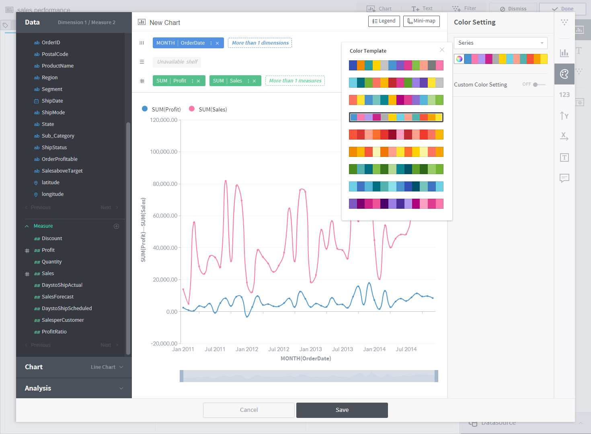

Step 3. Organize a dashboard¶
The final step is to create chart widgets, text widgets, and filter widgets to fill the empty dashboard. The dashboard can be edited in the following order:

Using the Sales Report created earlier, let’s add a key performance indicator chart and a line chart to the dashboard.

In the empty dashboard, click the Chart button to create a chart.

Creating a key performance indicator chart¶
The first chart you will be creating is a key performance indicator (KPI) chart. The KPI chart is a simple yet powerful chart that displays the goals of an organization in an intuitive manner. The goal of our dashboard is to clearly present sales data. As such, the KPI chart should include total sales, sales forecast, and profit. What should we do? Simply click the three measurement columns named “Sales,” “SalesForecast,” and “Profit” under the Data menu. This task is called pivoting. The pivoted columns are automatically aggregated and placed on shelves. Once columns are on shelves, suitable charts are recommended. How about clicking the recommended KPI chart?

The KPI chart is created as follows: To make it more presentable, let’s enter the chart properties menu on the right.

Click  to enter the Common Setting panel and add an icon to each measure column.
to enter the Common Setting panel and add an icon to each measure column.

Click  to enter the Number Format panel and change the decimal place and abbreviation display.
to enter the Number Format panel and change the decimal place and abbreviation display.

The most important feature of the KPI chart is comparing present achievements with past performance. Click  to enter the Set up secondary indicators panel. Set a secondary indicator, and check the % improvement in performance compared to the previous month. If you wish, you can emphasize the secondary indicator instead of the original indicator.
to enter the Set up secondary indicators panel. Set a secondary indicator, and check the % improvement in performance compared to the previous month. If you wish, you can emphasize the secondary indicator instead of the original indicator.

Click Save to display the chart in the dashboard.

Creating a line chart¶
Next, let’s create a line chart, the most basic type of chart. Shall we take a look at how sales and profit change over time? Again, click the Chart button to begin drawing a new chart. Click the OrderDate, Profit, and Sales columns to see how the values change over time. Click the recommended Line Chart.

A line chart is drawn. Open the chart properties panel, and change the line shape to “round.”

There is too much data as OrderDate is aggregated on an hourly basis. To view by month, go to the menu of the OrderDate column, and set Granularity as Month. The entire data is displayed now! Click Mini Map on the upper right to remove the mini map from the chart.

Click  on the right menu, and change colors using the Color Setting panel.
on the right menu, and change colors using the Color Setting panel.

Click Save, and drag and drop the chart to the desired position. Add information to the dashboard by adding a text widget. Click Done to finish dashboard editing.

In this tutorial, you learned how to draw two chart types. Using the interactive dashboard, you can select a chart or add filters to present data as desired. You can also modify, add, or delete charts if required.
Are you ready to learn more about Metatron Discovery?